실내건축기사(구) (2021-09-12 기출문제)
1과목: 실내디자인론
1. 면에 관한 설명으로 옳지 않은 것은?
- 곡면과 평면의 결합으로 대비 효과를 얻을 수 있다.
- 면의 구성방법에는 지배적 구성, 분리 구성, 일렬 구성, 자유 구성 등이 있다.
- 실내 공간에서의 모든 형태는 면의 요소로 간주되며, 크게 이념적 면과 현실적 면으로 대별된다.
- 면의 심리적 인상은 그 면이 놓인 위치, 질감, 색, 패턴 또는 다른 면과의 관계 등에 따라 차이를 나타낸다.
(정답률: 63%)

2. 오피스 랜드스케이프(office landscape)에 관한 설명으로 옳지 않은 것은?
- 소음이 발생하기 쉽다.
- 공간의 독립성 확보가 용이하다.
- 고정된 칸막이를 사용하지 않고 이동식을 사용한다.
- 변화하는 업무의 흐름이나 작업 패턴에 신속하게 대응할 수 있다.
(정답률: 81%)
3. 브라인드(blind)에 관한 설명으로 옳지 않은 것은?
- 롤 브라인드는 쉐이드라고도 한다.
- 베네시안 브라인드는 수평형 브라인드이다.
- 로만 브라인드는 날개의 각도로 채광량을 조절한다.
- 베네시안 브라인드는 날개 사이에 먼지가 쌓이기 쉽다.
(정답률: 68%)
4. 공간 내 패턴의 사용에 관한 설명으로 옳지 않은 것은?
- 수평의 줄무늬는 공간을 넓고 낮게 보이게 한다.
- 패턴은 선, 형태, 조명, 색채 등의 사용으로 만들어진다.
- 지루하게 긴 벽체는 수직의 패턴을 이용하여 지루함을 줄인다.
- 작은 공간에서 여러 패턴을 혼용하여 사용할 경우, 공간이 크게 넓게 보이게 된다.
(정답률: 86%)
5. 다음 중 상점의 점두(shop facade) 디자인에서 고려할 사항과 가장 거리가 먼 것은?
- 경제성을 베제한 시각효과
- 개성적이고 인상적인 표현
- 상점내부로의 고객유도 효과
- 취급상품에 대한 시각적 표현
(정답률: 88%)
6. 의자에 관한 설명으로 옳지 않은 것은?
- 스툴(stool)은 등받이와 팔걸이가 없는 형태의 보조의자이다.
- 오토만(Ottoman)은 좀 더 편안한 휴식을 위해 발을 올려놓는데도 사용된다.
- 풀업체어(Pull-up chair)는 필요에 따라 이동시켜 사용할 수 있는 간이의자이다.
- 라운지 체어(Lounge chair)은 오래 전부터 식탁과 함께 사용되어온 식사를 위한 의자로 다이닝 체어라고도 한다.
(정답률: 77%)
7. 한 선분을 길이가 다른 두 선분으로 분할했을 때 긴 선분에 대한 짧은 선분의 길이의 비가 전체 선분에 대한 긴 선분의 길이의 비와 같을 때 이루어지는 비례는?
- 황금비
- 정수비례
- 비대칭 분할
- 피보나치 비율
(정답률: 60%)
8. 실내디자인 진행과정에 있어서, 조건설정 단계의 프로젝트별 조사 내용으로 옳지 않은 것은?
- 미술관 – 전시벽면의 마감과 조명형식
- 주택 – 거주자의 가족구성 및 생활양식
- 상점 – 취급상품의 성격과 소비자의 취향
- 레스토랑 – 취급하는 음식의 종류와 고객의 연령층
(정답률: 71%)
9. 벽에 관한 설명으로 옳지 않은 것은?
- 실내공간의 형태와 규모를 결정하는 기본적인 요소이다.
- 외부환경으로부터 인간을 보호하고 프라이버시를 지켜준다.
- 다른 요소들에 비해 시대와 양식에 의한 변화가 거의 없다.
- 일반적으로 벽의 높이가 600mm 정도이면 공간을 한정할 수 있지만 감싸는 효과는 없다.
(정답률: 80%)
10. 단독주택의 부엌에 관한 설명으로 옳은 것은?
- 일반적으로 부엌의 크기는 주택 연면적의 3% 정도로 한다.
- 부엌의 규모가 큰 경우 작업대의 배치방법은 일렬형이 주로 사용된다.
- 일반적으로 작업대의 높이는 500~600mm, 깊이는 750~800mm로 한다.
- 작업대는 작업순서를 고려하여 준비대→개수대→조리대→가열대→배선대 순서로 배치한다.
(정답률: 76%)
11. 다음 설명에 알맞은 디자인 원리는?
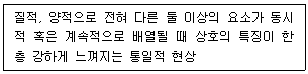
- 균형
- 대비
- 리듬
- 비례
(정답률: 73%)
12. 수직벽면을 빛으로 쓸어내리는 듯한 효과를 주기 위해 비대칭 배광방식의 조명기구를 사용하여 수직벽면에 균일한 조도의 빛을 비추는 조명 연출기법은?
- 그레이징(glazing) 기법
- 빔플레이(beam play) 기법
- 월워싱(wall washing) 기법
- 그림자연출(shadow play) 기법
(정답률: 82%)
13. 호텔의 실내계획에 관한 설명으로 옳은 것은?
- 현관은 퍼블릭 스페이스의 중심으로 로비, 라운지와 분리하지 않고 통합시킨다.
- 호텔의 동선은 이동하는 대상에 따라 고객, 종업원, 물품 등으로 구분되며 물품동선과 고객동선은 교차시키는 것이 좋다.
- 프론트 오피스는 수평동선이 수직동선으로 전이되는 공간으로, 외관과 함께 호텔의 전체적인 인상을 보여주는 역할을 한다.
- 주식당(main dining room)은 숙박객 및 외래객을 대상으로 하며 외래객이 편리하게 이용할 수 있도록 출입구를 별도로 설치하는 것이 좋다.
(정답률: 55%)
14. 실내디자인에 관한 설명으로 옳은 것은?
- 실내공간을 사용목적에 따라 편리하고 쾌적한 분위기가 되도록 설계하는 것이다.
- 실내공간의 기능적, 정서적 측면을 다루는 분야로 환경적, 기술적인 부분은 제외된다.
- 사용자를 위한 기능적 공간의 완성보다는 예술적 공간의 창조에 더 많은 가치를 둔다.
- 사용자의 심미적이고 심리적인 면을 충족시키기 위하여 디자이너의 독창성과 개성은 배제한다.
(정답률: 88%)
15. 사무실의 책상배치 유형 중 면적효율이 좋고 커뮤니케이션(communication) 형성에 유리하여 공동작업의 형태로 업무가 이루어지는 사무실에 적합한 유형은?
- 동향형
- 대향형
- 자유형
- 좌우대칭형
(정답률: 66%)
16. 다음과 같은 주택의 거실의 가구배치유형은?
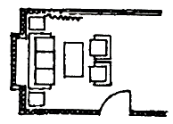
- 대면형
- U자형
- 직선형
- 코너형
(정답률: 90%)
17. 다음과 같은 특징을 갖는 문의 종류는?
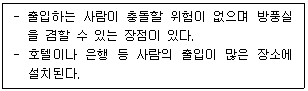
- 회전문
- 접이문
- 미닫이문
- 여닫이문
(정답률: 90%)
18. 다음 설명에 알맞은 건축화조명방식은?
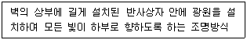
- 코퍼 조명
- 광창 조명
- 코니스 조명
- 광천장 조명
(정답률: 60%)
19. 다음 설명에 알맞은 사무소 건축의 코어 유형은?
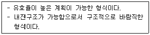
- 편심코어형
- 독립코어형
- 중심코어형
- 양단코어형
(정답률: 66%)
20. 단독주택의 현관에 관한 설명으로 옳지 않은 것은?
- 거실이나 침실의 내부와 직접 연결되도록 배치한다.
- 현관의 위치는 도로와의 관계, 대지의 형태 등에 의해 결정된다.
- 바닥 마감재료는 내수성이 강한 석재, 타일, 인조석 등이 바람직하다.
- 현관의 크기는 주택의 규모와 가족의 수, 방문객의 예상수 등을 고려한 출입량에 중점을 두어 계획하는 것이 바람직히다.
(정답률: 81%)
2과목: 색채학
21. 다음 중 디바이스 종속적 색체계가 아닌 것은?
- RGB
- HSV
- CIE XYZ
- CMY
(정답률: 58%)
22. 색의 주목성에 관한 설명 중 틀린 것은?
- 한색 계통이 주목성이 높다.
- 난색 계통이 주목성이 높다.
- 고채도의 색이 주목성이 높다.
- 명시도가 높은 색이 주목성인 높다.
(정답률: 74%)
23. 먼셀(Munsell)의 색체계에 대한 설명이 틀린 것은?
- 중심축은 무채색으로 명도를 나타낸다.
- 중심부로 갈수록 채도가 높아진다.
- 색상마다 최고 채도의 위치는 다르다.
- 중심부에서 하단으로 내려가면 명도는 낮아진다.
(정답률: 69%)
24. 가산혼합에서 녹색과 파랑의 혼합색은?
- 회색(gray)
- 시안(cyan)
- 보라(purple)
- 검정(black)
(정답률: 74%)
25. 디지털 이미지의 특징 중 해상도(resolution)에 대한 설명으로 잘못된 것은?
- 동일한 해상도에서 큰 모니터가 더 선명하고, 작은 모니터일수록 선명도가 떨어진다.
- 하나의 이미지 안에 몇 개의 픽셀을 포함하는가에 대한 척도 단위로는 dpi를 사용한다.
- 해상도는 픽셀들의 집합으로 한 시스템 내에서 픽셀의 개수는 정해져 있다.
- 해상도는 디스플레이 모니터 안에 있는 픽셀의 숫자로 가로방향과 세로방향의 픽셀의 개수를 곱하면 된다.
(정답률: 77%)
26. 파버 비렌(Faber Birren)의 색체 조화론에서 사용되는 색조군에 대한 설명 중 옳은 것은?
- Tint : 흰색과 검정이 합쳐진 밝은 색조
- Tone : 순색과 흰색이 합쳐진 톤
- Shade : 순색과 검정이 합쳐진 어두운 색조
- Gray : 순색과 흰색 그리고 검정이 합쳐진 회색조
(정답률: 56%)
27. CIE 표색방법에 관한 설명 중 옳은 것은?
- 적, 녹, 청의 3색광을 혼합하여 3자 극치에 따른 표색방법
- 색 필터의 중심으로 인한 다른 색상의 표색방법
- 일정한 원색을 혼합하여 얻는 방법
- 주관적인 색채 표시방법
(정답률: 47%)
28. 다음 중 수식형용사를 적용한 색채표현이 옳은 것은? (KS 한국산업펴준 기준)
- 어두운 보랏빛 회색
- 노란 밝은 주황
- 자줏빛 흐린 분홍
- 맑은 자주
(정답률: 54%)
29. 망막 상에 추상체와 간상체가 모두 활동하므로 시각적인 정확성을 기대하기 어려운 상태는?
- 색약
- 맹점
- 박명시
- 부분색명
(정답률: 54%)
30. 혼합되는 각각의 색 에너지(energy)가 합쳐져서 더 밝은 색을 나타내는 혼합은?
- 감산혼합
- 중간혼합
- 가산혼합
- 색료혼합
(정답률: 67%)
31. 오스트발트(Ostwald) 조화론의 등색상삼각형의 조화가 아닌 것은?
- 등순색계열의 조화
- 등백색계열의 조화
- 등흑색계열의 조화
- 등명도계열의 조화
(정답률: 62%)
32. 똑같은 에너지를 가진 각 파장의 단색광에 의하여 생기는 밝기의 감각은?
- 시감도
- 명순응
- 색순응
- 항상성
(정답률: 50%)
33. 맥스웰 디스크(Maxwell's Disk)와 관계가 있는 것은?
- 병치혼합
- 회전혼합
- 감산혼합
- 색료혼합
(정답률: 54%)
34. 1976년 CIE가 추천하여 지각적으로 거의 균등한 간격을 가진 색공간은?
- HSV
- RGB
- CMYK
- CIELAB
(정답률: 54%)
35. 다음 중 가장 명도차가 큰 배색은?
- 파랑 - 빨강
- 연두 - 청록
- 파랑 - 주황
- 노랑 – 남색
(정답률: 73%)
36. 빨강 위에 노랑 보다 회색 위의 노랑이 더욱 선명하게 보이는 현상은?
- 색상 대비
- 계속 대비
- 채도 대비
- 보색 대비
(정답률: 56%)
37. 먼셀(Munsell) 기호 중 신록이나 목장, 신선한 기운을 상징하기에 가장 적절한 색은?
- 10R 6/2
- 10G 2/3
- 5GY 7/6
- 10B 4/3
(정답률: 55%)
38. 먼셀(Munsell)의 색체계에서 5R의 보색은?
- 5Y
- 5G
- 5PB
- 5BG
(정답률: 50%)
39. 오스트발트(Ostwald) 등가색환에 있어서의 조화를 기호로 나타낸 것 중 보색조화에 해당하는 것은?
- 2ic - 4ic
- 8ni - 14ni
- 4Pg - 12Pg
- 2Pa – 14Pa
(정답률: 56%)
40. 주변의 색에 순도를 올리면 그대로 색상이 유지되지 않고 채도의 단계에 따라 색상이 달라져 보이는 현상은?
- 베졸트 브뤼케 현상
- 색음 현상
- 색각 항상 현상
- 에브니 효과 현상
(정답률: 40%)
3과목: 인간공학
41. 인간의 적합, 적응, 순응, 피로상태를 형태, 생리, 운동, 심리 등의 관점에서 연구하는 방법은?
- 반응 조사법
- 제품 분석법
- 직접적 관찰법
- 라이프 스타일(Life style) 분석법
(정답률: 52%)
42. 주사인정시야의 좌우, 상부, 하부의 범위가 올바르게 나열된 것은?
- 좌우 : 10~15°, 상부 : 5~8°, 하부 : 12~15°
- 좌우 : 20~30°, 상부 : 10~20°, 하부 : 15~25°
- 좌우 : 30~40°, 상부 : 20~30°, 하부 : 25~40°
- 좌우 : 50~60°, 상부 : 30~40°, 하부 : 35~45°
(정답률: 42%)
43. 의자 좌면의 너비를 결정하는데 가장 적합한 규격은?
- 사용자의 평균 엉덩이 너비에 맞도록 규격을 정한다.
- 사용자의 중위수(medium) 엉덩이 너비에 맞도록 규격을 정한다.
- 사용자의 5퍼센타일(percentile) 엉덩이 너비에 맞도록 규격을 정한다.
- 사용자의 95퍼센타일(percentile) 엉덩이 너비에 맞도록 규격을 정한다.
(정답률: 58%)
44. 다음 중 신체 측정치에 영향을 끼칠 수 있는 변수(variability)로만 나열된 것은?
- 직업, 종교, 성별
- 인종, 계측장비, 종교
- 나이, 직업, 계측장비
- 인종, 나이, 성별
(정답률: 76%)
45. 안전보건표지의 색채와 용도, 사용 예시가 바르게 연결된 것은?
- 녹색 – 금지 – 유해행위의 금지
- 빨간색 – 안내 – 피난소 통행표지
- 파란색 – 지시 – 특정 행위의 지시
- 노란색 – 금지 – 정지신호 및 특정 행위의 금지
(정답률: 58%)
46. 일반적으로 조명시스템이 시각의 안정을 위해 갖추어야 할 조건으로 적합하지 않은 것은?
- 모든 공정의 작업면에는 국부조명을 사용하는 것이 바람직하다.
- 반사 눈부심의 처리를 위하여 휘도를 낮게 유지한다.
- 직사 눈부심의 처리를 위하여 광원을 시선에서 멀리 위치시킨다.
- 시각 작업의 효율을 높이기 위하여 개인별 시각 차이를 고려한다.
(정답률: 64%)
47. 눈의 시세포에 관한 설명으로 옳은 것은?
- 원추세포는 색을 구분할 수 없다.
- 원추세포의 수는 간상세포의 수보다 많다.
- 간상세포는 난색계열의 색을 구분할 수 있다.
- 사람의 눈에는 1억개 이상의 간상세포가 있다.
(정답률: 48%)
48. 폰(phon)에 관한 설명으로 옳은 것은?
- 1000Hz, 1dB인 음은 10phon이다.
- 특정 음과 같은 크기로 들리는 1000Hz 순음의 음압수즌 값이다.
- 1000Hz, 60dB인 음은 1000Hz, 40phon인 음보다 100배 큰 음이다.
- phon값은 주파수 보정효과는 없으나 상대적인 크기를 나타낸다.
(정답률: 36%)
49. 조도(illumination)의 단위에 해당하는 것은?
- lumen
- fc(foot-candle)
- NIT(cd/m2)
- fL(foot-Lamberts)
(정답률: 50%)
50. 외이(external ear)의 특징으로 옳은 것은?
- 내부에 귀지선이 있어 이물질의 침입을 방지한다.
- 고막, 고실, 이관, 정원창, 난원창으로 구성되어 있다.
- 소리에너지를 받아 와우(cochlea)까지 전달해주는 역할을 한다.
- 중간계 속에는 청각기인 콜티기관(organ of Corti)이 들어 있다.
(정답률: 51%)
51. 시각표시장치에서 시차(parallax)를 줄이는 방법으로 가장 적절한 것은?
- 숫자와 눈금을 같은 색으로 칠한다.
- 가능한 한 끝이 둥근 지침을 사용한다.
- 지침을 다이얼면과 최소한으로 붙인다.
- 지침이 계속해서 회전하는 계기의 영점은 3시 방향에 둔다.
(정답률: 62%)
52. 다음과 같은 인간-기계 통합체계를 컴퓨터시스템과 비교할 때 빗금 친 (가)부분에 해당하는 컴퓨터시스템 구성요소는?
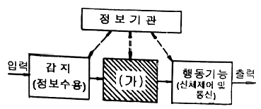
- 프린터(Printer)
- 중앙처리장치(CPU)
- 감지장치(Sensor)
- 펀치카드(Punch card)
(정답률: 78%)
53. 다음 재료 중 흡음률이 가장 높은 것은?
- 벽돌
- 대리석
- 유리
- 소나무
(정답률: 60%)
54. 인체의 감각기관을 통해 현존하는 환경의 자극에 대한 정보를 받아들이게 되는 과정을 무엇이라 하는가?
- 지각
- 반응
- 주의
- 선호도
(정답률: 72%)
55. 조종-반응 비율(C/R 비)에 대한 설명으로 옳지 않은 것은?
- C/R 비가 클수록 조종장치는 민감하다.
- C/R 비가 작으면 조종시간은 오래 걸린다.
- 표시장치의 반응거리에 대한 조종장치를 이동한 거리의 비율이다.
- 최적 C/R 비는 조정시간과 이동시간의 합이 최소가 되는 점을 가리킨다.
(정답률: 38%)
56. 다음 중 짐을 나르는 방법에 따른 산소소비량(에너지)이 가장 높은 것은?
- 배낭형태로 나른다.
- 머리에 이고 나른다.
- 양손에 들고 나른다.
- 등과 가슴을 이용하여 나른다.
(정답률: 69%)
57. 동작경제의 원칙 중 작업장의 배치에 관한 원칙에 해당하는 것은?
- 공구의 기능을 결합하여 사용하도록 한다.
- 모든 공구나 재료는 자기 위치에 있도록 한다.
- 가능하다면 쉽고도 자연스러운 리듬이 생기도록 동작을 배치한다.
- 눈의 초점을 모아야 작업을 할 수 있는 경우는 가능하면 없애도록 한다.
(정답률: 45%)
58. 진동이 인간의 성능에 미치는 영향에 관한 설명으로 옳지 않은 것은?
- 진동은 시성능을 저하시킨다.
- 진동은 추적 작업의 성능을 저하시킨다.
- 진동은 인간의 운동성능에는 별다른 영향을 주지 않는다.
- 진동은 주로 중앙 신경계의 처리과정과 관련되는 과업의 성능에는 비교적 영향을 덜 받는다.
(정답률: 67%)
59. 시각적 표시장치의 지침 설계 요령으로 적합한 것은?
- 끝이 둥근 지침을 사용하여 안정감을 높인다.
- 원형 눈금의 경우 지침의 색은 선단의 끝에만 칠한다.
- 정확한 가독을 위하여 지침은 눈금면과 가능한 한 분리시킨다.
- 지침의 끝은 작은 눈금과 맞닿되 겹치지는 않게 한다.
(정답률: 53%)
60. 호흡계(respiratory system)에 관한 설명으로 옳지 않은 것은?
- 호흡계는 산소를 공급하고, 이산화탄소를 제거하는 일을 수행한다.
- 호흡계는 비강, 후두 등의 전도부와 폐포, 폐포관 등의 호흡부로 이루어진다.
- 허파에서 공기와 혈액 사이에 일어나는 기체교환을 내호흡 또는 조직호흡이라 한다.
- 호흡이란 생명현상을 유지하기 위하여 산소를 섭취하고 이산화탄소를 배출하는 일련의 과정을 말한다.
(정답률: 50%)
4과목: 건축재료
61. 방사선 차단용으로 사용되는 시멘트 모르타르로 옳은 것은?
- 질석 모르타르
- 바라이트 모르타르
- 아스팔트 모르타르
- 활석면 모르타르
(정답률: 51%)
62. 미장재료 중 고온소성의 무수석고를 특별한 화학처리 한 것으로 킨즈시멘트라고도 불리우는 것은?
- 경석고 플라스터
- 혼합석고 플라스터
- 보드용 플라스터
- 돌로마이트 플라스터
(정답률: 53%)
63. 알루미늄 등 경금속의 접착에 쓰이는 합성수지는?
- 페놀수지
- 에폭시수지
- 요소수지
- 알키드수지
(정답률: 53%)
64. 목재의 방부제에 관한 설명으로 옳지 않은 것은?
- 유성 및 유용성 방부제는 물에 의해 용출하는 경우가 많으므로 습윤의 장소에는 사용하지 않는다.
- 유성페인트를 목재에 도포하면 방습, 방부효과가 있고 착색이 자유로워 외관을 미화하는데 효과적이다.
- 황산동 1%용액은 방부성은 좋으나 철재를 부식시키며 인체에 유해하다.
- 크레오소트 오일은 방부성은 우수하나 악취가 있고 흑갈색이므로 외관이 미려하지 않아 토대, 기둥 등에 주로 사용된다.
(정답률: 44%)
65. 로이(Low-E)유리에 관한 설명으로 옳지 않은 것은?
- 로이유리는 대부분 복층유리 또는 삼중유리로 제작하여 사용한다.
- 하드로이는 유리 제조과정에서 금속이온을 스프레이 코팅하여 제작한다.
- 소프트로이는 진공상태에서 금속코팅하여 제작한다.
- 로이 복층유리 제작 시 알곤가스 충전은 열차단효과를 저하시키므로 사용이 불가하다.
(정답률: 57%)
66. KS L 9007에서 규정하는 미장재료로 사용되는 소석회의 주요 품질평가항목이 아닌 것은?
- 분말도 잔량
- 점도계수
- 경도계수
- 응결시간
(정답률: 36%)
67. 금속의 부식발생을 제어하기 위해 사용되는 방청도료와 가장 거리가 먼 것은?
- 광명단조합페인트
- 에칭프라이머
- 징크로메이트 도료
- 수성페인트
(정답률: 62%)
68. 재료에 하중이 반복하여 작용할 때 정적 강도보다 낮은 강도에서 파괴되는 것을 무엇이라고 하는가?
- 크리프파괴
- 전단파괴
- 피로파괴
- 충격파괴
(정답률: 67%)
69. 수직면으로 도장하였을 경우 도장직후에 도막이 흘러내리는 현상의 발생 원인과 가장 거리가 먼 것은?
- 얇게 도장하였을 때
- 지나친 희석으로 점도가 낮을 때
- 저온으로 건조시간이 길 때
- airless 도장시 팁이 크거나 2차압이 낮아 분무가 잘 안되었을 때
(정답률: 59%)
70. 발포제로서 보드상으로 성형하여 단열재로 널리 사용되며 건축물의 천장재, 블라인드 등에도 널리 쓰이는 열가소성 수지는?
- 알키드 수지
- 요소 수지
- 폴리스티렌 수지
- 실리콘 수지
(정답률: 54%)
71. 목재에 관한 설명으로 옳지 않은 것은?
- 섬유포화점이란 흡착 수분만이 최대 한도로 존재하는 상태를 말하며 그때의 함수율은 약 30% 이다.
- 목재는 섬유포화점 이상의 함수상태에서는 함수율의 증감에 따라 신축하지 않으나 그 이하에서는 함수율에 비례하여 신축한다.
- 섬유포화점 이상에서는 목재의 강도는 일정하나 그 이하에서는 함수율이 감소하면 강도도 감소한다.
- 일반적으로 비중이 큰 목재일수록 강도는 커지는 반면 수축의 양은 많아진다.
(정답률: 45%)
72. 건축용 세라믹 제품에 관한 설명으로 옳지 않은 것은?
- 다공벽돌은 내부의 무수히 많은 구멍으로 인해 절단, 못치기 등의 가공성이 우수하다.
- 테라코타는 건축물의 패러핏, 주두 등의 장식에 사용되는 공동의 대형 점토제품이다.
- 위생도기는 철분이 많은 장석점토를 주원료로 사용한다.
- 일반적으로 모자이크타일 및 내장타일은 건식법, 외장타일은 습식법에 의해 제조된다.
(정답률: 50%)
73. 무늬유리 및 망유리의 제조 방식으로 가장 적합한 것은?
- 프레스 방식
- 롤 아웃 방식
- 플로트 방식
- 인양 방식
(정답률: 52%)
74. 굳지 않은 콘크리트의 성질을 표시하는 용어 중 거푸집 등의 형상에 순응하여 채우기 쉽고 재료의 분리가 일어나지 않는 성질을 말하는 것은?
- 워커빌리티(workability)
- 컨시스턴시(consistency)
- 플라스티시티(palsticity)
- 피니셔빌리티(finishability)
(정답률: 34%)
75. 합성수지를 전색제로 쓰고 소량의 안료와 인산을 첨부한 것으로 금속면의 바름 바탕처리를 위한 도료는?
- 워시 프라이머
- 오일 프라이머
- 규산염 도료
- 역청질 도료
(정답률: 44%)
76. 표면을 연마하여 고광택을 유지하도록 만든 시유타일로 대형 타일에 많이 사용되며, 천연화강석의 색깔과 무늬가 표면에 나타나게 만들 수 있는 것은?
- 모자이크 타일
- 징크판넬
- 논슬림타일
- 폴리싱타일
(정답률: 60%)
77. 판두께 1.2mm 이하의 얇은 판에 여러 가지 모양으로 도려낸 철판으로서 환기공, 인테리어벽, 천장 등에 이용되는 금속 성형 가공제품은?
- 익스팬디드 메탈
- 펀칭 메탈
- 키스톤 플레이트
- 스팬드럴 패널
(정답률: 63%)
78. 콘크리트 배합시 시멘트 1m3, 물 2000L 인 경우 물-시멘트비는? (단, 시멘트의 밀도는 3.15g/cm3 이다.)
- 약 15.7%
- 약 20.5%
- 약 50.4%
- 약 63.5%
(정답률: 31%)
79. 멤브레인(membrane)방수층에 포함되지 않는 것은?
- 아스팔트 방수층
- 스테인리스 시트 방수층
- 합성고분자계 시트 방수층
- 도막 방수층
(정답률: 41%)
80. 점토에 관한 설명으로 옳지 않은 것은?
- 점토의 색상은 철산화물 또는 석회물질에 의해 나타난다.
- 점토의 가소성은 점토입자가 미세할수록 좋다.
- 압축강도와 인장강도는 거의 비슷하다.
- 소성수축은 점토 중 휘발분의 양, 조직, 용융도 등이 영향을 준다.
(정답률: 57%)
5과목: 건축일반
81. 로마건축의 5가지 오더(order)에 속하지 않는 것은?
- 도릭(doric)식
- 터스칸(tuscan)식
- 콤포지트(composite)식
- 로마네스크(romanesque)식
(정답률: 48%)
82. 피난용승강기 승강장의 구조 기준으로 옳지 않은 것은?
- 승강장의 출입구를 제외한 부분은 해당 건축물의 다른 부분과 내화구조의 바닥 및 벽으로 구획할 것
- 승강장은 각 충의 내부와 연결될 수 있도록 하되, 그 출입구에는 60+방화문 또는 60분방화문을 설치할 것
- 배연설비를 설치할 것
- 실내에 접하는 부분(바닥 및 반자 등 실내에 면한 모든 부분을 말한다)의 마감(마감을 위한 바탕을 포함한다)은 난연재료로 할 것
(정답률: 58%)
83. 한국의 목조건축에서 기둥을 위한 외장기법이 아닌 것은?
- 민도리
- 귀솟음
- 안쏠림
- 배흘림
(정답률: 46%)
84. 건축물의 내부에 설치하는 피난계단의 구조에서 계단실의 실내에 접하는 부분의 마감에 쓰이는 재료는?
- 난연재료
- 불연재료
- 준불연재료
- 내수재료
(정답률: 63%)
85. 소방시설법에서 정의하는 다음 내용에 해당하는 용어는?
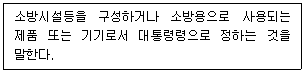
- 특정소방대상물
- 소화용수설비
- 소화설비
- 소방용품
(정답률: 41%)
86. 상업지역 및 주거지역에서 건축물에 설치하는 냉방시설 및 환기시설의 배기구와 배기장치의 설치 기준으로 옳지 않은 것은?
- 건축물의 외벽에 배기구를 설치할 때에는 배기구가 떨어지는 것을 방지할 수 있도록 하여야 한다.
- 배기구는 도로면으로부터 3m 이상의 높이에 설치하여야 한다.
- 배기장치에서 나오는 열기가 보행자에게 직접 닿지 않도록 설치하여야 한다.
- 건축물의 외벽에 배기구 또는 배기장치를 설치할 때에 사용하는 보호장치는 부식을 방지할 수 있는 자재를 사용하거나 도장하여야 한다.
(정답률: 63%)
87. 건축허가 등을 할 때 미리 소방본부장 또는 소방서장의 동의를 받아야 하는 건축물의 최소 연면적 기준으로 옳은 것은? (단, 학교시설인 경우)
- 100m2 이상
- 200m2 이상
- 300m2 이상
- 400m2 이상
(정답률: 24%)
88. 다음은 건축물의 지하층과 피난층 사이의 개방공간 설치에 관한 사항이다. ( ) 안에 알맞은 것은?
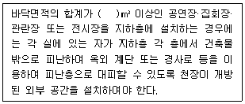
- 1500
- 2000
- 3000
- 4000
(정답률: 49%)
89. 주요구조부가 내화구조 또는 불연재료로 된 연면적이 1000m2를 넘는 건축물에 설치하는 방화구획 기준이 옳지 않은 것은? (단, 스프링클러 기타 이와 유사한 자동식 소화설비를 설치하지 않은 경우)
- 11층 이상의 부분 중 벽 및 반자의 실내에 접하는 부분의 마감을 불연재료로 한 경우에는 바닥면적 500m2 이내마다 구획한다.
- 매층마다 구획한다. 다만, 지하 1층에서 지상으로 직접 연결하는 경사로 부위는 제외한다.
- 11층 이상의 층은 바닥면적 300m2 이내마다 구획한다.
- 10층 이하의 층은 바닥면적 1000m2 이내마다 구획한다.
(정답률: 31%)
90. 철골구조에 대한 설명 중 옳지 않은 것은?
- 소성변형능력이 커서 안전성이 높다.
- 고층 건물이나 장스팬 구조에 적당하다.
- 부재가 세장하므로 좌굴의 위험성이 높다.
- 내화력이 크므로 내화피복이 필요하지 않다.
(정답률: 56%)
91. 건축물의 피난·방화구조 등의 기준에 관한 규칙상 방화구조의 기준으로 옳지 않은 것은?
- 철망모르타르로서 그 바름두께가 2cm 이상인 것
- 석고판 위에 시멘트모르타르 또는 회반죽을 바른 것으로서 그 두께의 합계가 1.5cm 이상인 것
- 시멘트모르타르 위에 타일을 붙인 것으로서 그 두께의 합계가 2.5cm 이상인 것
- 심벽에 흙으로 맞벽치기한 것
(정답률: 45%)
92. 소방시설 중 소화설비에 해당하는 것은?
- 자동화재탐지설비
- 연결송수관설비
- 연결살수설비
- 소화기구
(정답률: 44%)
93. 판매시설의 용도에 쓰이는 바닥면적이 최대인 층에 있어서의 바닥면적이 600m2 일 때 피난층에 설치하는 건축물 바깥쪽으로 출구의 유효너비의 합계는 최소 얼마 이상으로 하여야 하는가?
- 1.2m
- 2.4m
- 3.6m
- 4.8m
(정답률: 36%)
94. 철근콘크리트구조의 성립요건에 대한 설명 중 옳지 않은 것은?
- 인장력은 콘크리트가 부담하고, 압축력은 철근이 부담한다.
- 콘크리트는 철근이 녹스는 것을 방지한다.
- 콘크리트와 철근이 강력히 부착되면 철근의 좌굴이 방지된다.
- 철근과 콘크리트의 선팽창계수는 거의 같다.
(정답률: 43%)
95. 조적식구조에서 각 층의 대린벽으로 구획된 각 벽에 있어서 개구부 폭의 합계는 그 벽의 길이의 최대 얼마 이하로 하여야 하는가?
- 1/5
- 1/3
- 1/2
- 2/3
(정답률: 34%)
96. 스프링클러설비를 설치하여야 하는 특정소방대상물 중 스프링클러설비를 모든 층에 설치하여야 하는 수용인원 기준으로 옳은 것은? (단, 동·식물원을 제외한 문화 및 집회시설의 경우)
- 50명 이상
- 100명 이상
- 200명 이상
- 300명 이상
(정답률: 52%)
97. 비상조명등을 설치하여야 하는 특정소방대상물에 해당하는 것은?
- 창고시설 중 창고
- 창고시설 중 하역장
- 위험물 저장 및 처리 시설 중 가스시설
- 지하가 중 터널로서 그 길이가 500m 이상인 것
(정답률: 57%)
98. 화재예방, 소방시설 설치·유지 및 안전관리에 관한 법령상 대통령령으로 정하는 특정소방대상물(신축하는 것만 해당)에 소방시설을 설치하려는 자는 그 용도, 위치, 구조, 수용 인원, 가연물(可燃物)의 종류 및 양 등을 고려하여 설계하여야 하는데 이와 같은 설계를 무엇이라 하는가?
- 소방시설 특수설계
- 최적화설계
- 성능위주설계
- 소방시설 정밀설계
(정답률: 37%)
99. 목구조 벽체의 수평력에 대한 보강 부재로 가장 유효한 것은?
- 가새
- 토대
- 통재기둥
- 샛기둥
(정답률: 55%)
100. 방염성기준 이상의 실내장식물을 설치하여야 하는 특정소방대상물에 해당하지 않는 것은?
- 아파트를 제외한 11층 이상인 건축물
- 옥내에 있는 수영장
- 다중이용업소
- 노유자시설
(정답률: 62%)
6과목: 건축환경
101. 다음의 급수방식 중 수질오염의 가능성이 가장 큰 것은?
- 수도직결방식
- 고가수조방식
- 압력수조방식
- 펌프직송방식
(정답률: 55%)
102. 다음의 공기조화방식 중 부하특성이 다른 여러 개의 실이나 존이 있는 건물에 적용이 가장 곤란한 것은?
- 이중덕트 방식
- 팬코일 유닛방식
- 단일덕트 정풍량 방식
- 단일덕트 변풍량 방식
(정답률: 44%)
103. 다음의 잔향시간에 관한 설명 중 ( )에 알맞은 것은?
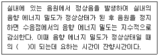
- 1/102
- 1/104
- 1/106
- 1/108
(정답률: 56%)
104. 벽의 차음력에 관한 설명으로 옳지 않은 것은?
- 투과율이 작을수록 차음력은 커진다.
- 투과손실(TL)이 작을수록 차음력은 커진다.
- 일반적으로 벽의 두께가 두꺼울수록 차음력이 우수하다.
- 흡음률이 동일할 경우 반사율이 높은 재료가 낮은 재료보다 차음력이 크다.
(정답률: 49%)
1⑤. 다음의 자동화재탐지설비의 감지기 중 연기감지기에 속하는 것은?
- 광전식
- 보상식
- 차동식
- 정온식
(정답률: 42%)
106. 실내공기질 관리법령에 따른 신축 공동주택의 실내공기질 측정항목에 속하지 않는 것은?
- 벤젠
- 라돈
- 자일렌
- 에틸렌
(정답률: 41%)
107. 인체의 열적 쾌적감에 영향을 미치는 물리적 온열 4요소에 속하는 것은?
- 관류열
- 복사열
- 열용량
- 대사량
(정답률: 56%)
108. 다음과 같은 재료로 구성된 벽체의 열관류율은? (단, 실내표면 열전달률은 9W/m2·K, 실외표면 열전달률은 20W/m2·K 이다.)
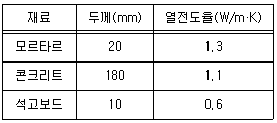
- 2.5W/m2·K
- 2.8W/m2·K
- 3.1W/m2·K
- 3.3W/m2·K
(정답률: 38%)
109. 습공기를 가습하였을 때의 상태변화로 옳은 것은? (단, 건구온도는 일정하다.)
- 엔탈피가 커진다.
- 노점온도가 낮아진다.
- 습구온도가 낮아진다.
- 절대습도가 작아진다.
(정답률: 46%)
110. 다음의 설명에 알맞은 음의 성질은?
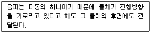
- 반사
- 흡음
- 간섭
- 회절
(정답률: 56%)
111. 굴뚝효과(stack effect)의 가장 주된 발생원인은?
- 온도차
- 유속차
- 습도차
- 풍향차
(정답률: 58%)
112. 재실자의 1인당 탄산가스 배출량이 0.03m3/h이고, 외부 신선한 공기의 CO2함유량은 0.03% 이다. 이 경우 실내에 재실자가 30명이고 실내 CO2허용 한도를 0.12%로 하려면 필요환기량은?
- 200 m3/h
- 600 m3/h
- 1000 m3/h
- 1400 m3/h
(정답률: 33%)
113. 다음 설명에 알맞은 건축화조명의 종류는?
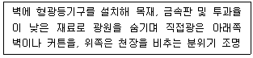
- 코브 조명
- 광창 조명
- 광천장 조명
- 밸런스 조명
(정답률: 46%)
114. 조명설비의 광원에 관한 설명으로 옳지 않은 것은?
- 형광램프는 점등장치를 필요로 한다.
- 고압나트륨램프는 할로겐전구에 비해 연색성이 좋다.
- LED램프는 수명이 길고 소비전력이 작다는 장점이 있다.
- 고압수은램프는 광속이 큰 것과 수명이 긴 것이 특징이다.
(정답률: 53%)
115. 대변기의 세정방식 중 플러시 밸브식에 관한 설명으로 옳은 것은?
- 대변기의 연속사용이 불가능하다.
- 급수관경과 필요 수압에 제한이 없어 급수압력이 낮은 곳에서도 사용이 용이하다.
- 핸들 또는 레버의 조작에 의해 낙차에 의한 수압으로 대변기를 세정하는 방식이다.
- 소음이 크고 단시간에 다량의 물이 필요하므로 가정용으로는 일반적으로 사용하지 않는다.
(정답률: 46%)
116. 눈부심을 방지하기 위한 방법으로 옳지 않은 것은?
- 광원 주위를 밝게 한다.
- 휘도가 낮은 형광램프를 사용한다.
- 플라스틱 커버가 설치되어 있는 조명기구를 선정한다.
- 시선을 중심으로 해서 30° 범위 내의 글레어 존(glare zone)에 광원을 설치한다.
(정답률: 46%)
117. 배스트랩에 관한 설명으로 옳지 않은 것은?
- 트랩은 배수능력을 촉진시킨다.
- 관트랩에는 P트랩, S트랩, U트랩 등이 있다.
- 트랩은 기구에 가능한 한 근접하여 설치하는 것이 좋다.
- 트랩의 유효봉수깊이가 너무 낮으면 봉수가 손실되기 쉽다.
(정답률: 38%)
118. 일사, 일조 조정을 위해 수평루버보다 수직루버의 설치가 더 효과적인 방위로만 연결된 것은?
- 동면과 서면
- 남면과 북면
- 동면과 남면
- 서면과 남면
(정답률: 42%)
119. 실내 조도가 옥외 조도의 몇%에 해당하는가를 나타내는 값은?
- 주광률
- 보수율
- 반사율
- 조명률
(정답률: 64%)
120. 복사에 관한 설명으로 옳지 않은 것은?
- 주위 공기온도의 영향을 받는다.
- 태양으로부터 지구로 전달되는 열은 복사열이다.
- 열을 전달하는 매질이 없어도 발생하는 현상이다.
- 물체에서 복사되는 열량은 그 표면의 절대온도의 4승에 비례한다.
(정답률: 22%)